Classification of P. falciparum infection recurrences with MalReBay
2026-10-09
Source:vignettes/MalReBay.qmd
1 Overview
MalReBay is an R package for classifying recurrent Plasmodium falciparum infections in Therapeutic Efficacy Studies (TES). For each patient, it estimates the probability that a recurrent infection is a recrudescence (i.e. a treatment failure) rather than a reinfection (a new infection acquired from a different mosquito bite after treatment). MalReBay uses a Bayesian approach published in Plucinski et al. 2015, which combines the available genotyping data with prior information to estimate this probability. The model uses Markov Chain Monte Carlo (MCMC) sampling to obtain the estimates.
Key advantages of MalReBay include:
Handles polyclonal infections, where a patient can carry multiple parasite strains
Imputes missing genotypes as part of the MCMC analysis, handling missing data
Works with the different genotyping approaches used in TES: microsatellites, MSP1/MSP2/GLURP length-polymorphic markers, and amplicon sequencing (AmpSeq)
2 Background
2.1 Why molecular correction?
The World Health Organization (WHO) recommends TES to monitor how well antimalarial drugs are working: patients with uncomplicated malaria are treated and then followed for several weeks to check whether the infection cleared and stayed away.
A parasite reappearing during follow-up can mean one of two things, and they look clinically identical:
- Recrudescence: the original infection was never fully cleared by the drug and a sign of treatment failure.
- New infection (reinfection): a new, unrelated infection from a different mosquito bite and not a sign the drug failed.
Molecular correction tells the two types of recurrences apart by comparing the parasite genetic fingerprint at Day 0 against the fingerprint at the later time of recurrence. MalReBay performs this comparison with a Bayesian model.
2.2 How MalReBay works conceptually
For each patient, MalReBay asks: given the genotyping data at hand, how much more consistent is this pattern of alleles with “the same infection persisting” than with “a new, unrelated infection”?
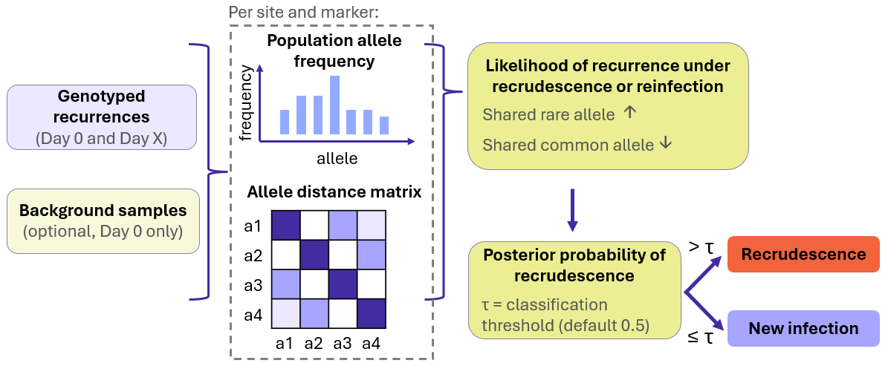
- Prior: before seeing any genetic data, recrudescence and reinfection are assumed equally likely (50/50).
- Likelihood: the model asks how well each hypothesis (recrudescence or reinfection) explains the observed alleles, accounting for how common each allele is in the local parasite population, how many parasite clones each sample carries (polyclonal infections), and marker-specific genotyping noise.
- Posterior: prior and likelihood are combined via Bayes’ rule, into a final probability of recrudescence per patient which is compared against a user-defined threshold (0.5 by default) to get a Recrudescence/New infection classification call.
MalReBay computes these posterior probabilities with Markov Chain Monte Carlo (MCMC) sampling, run through Stan.
2.3 The MalReBay workflow
The analysis runs in four stages:
import_data() Read and validate the genotyping + marker files
|
classify_infections() Run the Bayesian MCMC model, site by site
|
summarise_results() Turn raw outputs into clssification results, tables, diagnostics
|
save_results() Save CSVs and plots to a chosen folder (optional)All these steps are bundled inside the main MalReBay() function, used throughout this tutorial, which runs all four stages in a single call. The examples below also show examples of import_data() and classify_infections() used as separate steps and which are useful when you want to inspect or rerun part of the pipeline without repeating the rest.
3 Installation
CmdStan must be installed before installing MalReBay, as MalReBay contains an embedded Stan representation of the statistical model that is compiled during the MalReBay installation (see the package README for more details).
You only need to install CmdStan and MalReBay once. Once they are installed, you can use MalReBay directly in your R sessions.
Once the installation has completed successfully, or if the packages are already installed, the MalReBay package can be loaded.
4 Input data
MalReBay requires up to three inputs: a genotyping data file, a marker metadata file, and an MCMC configuration.
4.1 Genotyping data file
The main input is an Excel workbook (or a CSV file). The first sheet of the Excel file must contain one row per sample with the following column layout:
| Column 1 | Column 2 | Columns 3+ |
|---|---|---|
| Patient.ID | Site | Allele columns (marker_1, marker_2, …) where marker encodes the marker name |
Tip
💡Start from a template. Ready-to-fill Excel templates for each data type (microsatellites, MSP1/MSP2/GLURP, AmpSeq) are provided with the package and can also be downloaded from the templates folder on GitHub. Each has the two data sheets already laid out, example rows to replace, explanatory notes on the column headers, and an Instructions sheet.
Each patient with a genotyped recurrence must have exactly two rows on the data template:
- A Day 0 row
- A recurrence row
The site corresponds to the place/health facility where the samples were collected. A data file can contain samples from multiple sites, however the analysis is performed individually per each site.
Allele column naming. Columns are named <marker_id>_1, <marker_id>_2, … (or <marker_id>_allele_1, <marker_id>_allele_2, … both suffixes work for any data type) up to the maximum multiplicity of infection (MOI) seen in the study. For example, three columns msp1_1, msp1_2, msp1_3 encode up to three distinct alleles per sample at the marker msp1, this is how polyclonal infections are represented.
Missing values are recognized and set to NA automatically for: N/A, -, NA, na, "", " ".
A second sheet (optional) can supply additional Day-0-only background samples, used to estimate population allele frequencies more precisely. It can be a separate CSV file too, via the argument additional_filepath.
Tip
💡More background samples, more reliable results. MalReBay estimates how common each allele/family is in the local parasite population from the Day-0 samples it sees (the recurrence patient Day-0 rows, plus the infections from the background sheet). The more background Day-0 samples you provide, the more precisely those frequencies are estimated which directly affects how much weight a “match” carries. A handful of patients is enough to try the package out, but for a real analysis, you would need to include as much background Day-0 data as you have.
A single study can combine several length-polymorphic marker types, for example a panel of neutral microsatellites, or MSP1/MSP2/GLURP, or MSP1-2 and microsatellites together, as long as every marker has a matching row in the marker metadata file with the right binning_method (see next subsection). AmpSeq markers can’t be mixed with length polymorphic markers in the same file, because the whole input data file is classified as one data type.
Here is what this looks like in practice. A length-polymorphic (microsatellite) panel where allele columns hold fragment sizes in base pairs:
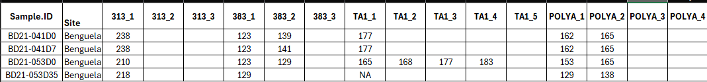
An AmpSeq panel has the same layout, but allele columns hold haplotype labels (e.g., cpmp_allele_1, etc.) instead of fragment sizes:
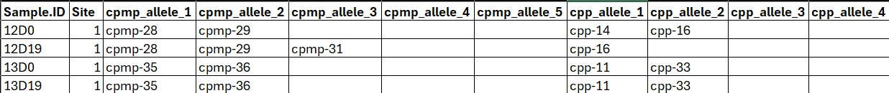
4.2 Marker metadata file
The marker metadata file is an Excel file with one row per marker. Required columns:
| Column | Description |
|---|---|
marker_id |
Marker name: must match the prefix of the allele columns in the genotyping file |
repeatlength |
Repeat unit length (bp) for microsatellites; cluster/gap threshold (bp) for MSP/GLURP; ignored for AmpSeq |
binning_method |
"microsatellite", "msp_glurp", or "exact" (AmpSeq) |
Only markers present in both the genotyping file and the marker metadata are used. The marker metadata can include information for other markers and they will just be skipped. You can thus keep one metadata file listing every marker your lab ever genotypes and reuse it across studies with different subsets of markers. One marker info file is provided within MalReBay:
marker_file <- system.file("extdata", "makers_details.xlsx", package = "MalReBay")
marker_info <- as.data.frame(readxl::read_excel(marker_file))
head(marker_info)The function import_data() auto-detects which type of data you have by looking at the first allele value in your data: a number means length-polymorphic data (microsatellites and/or MSP1/MSP2/GLURP) while text means AmpSeq data. Here we show an example loading genotyped infections using the CDC 7-microsatellite panel.
example_file <- system.file("extdata", "Dataset_microsatellite_panel.xlsx", package = "MalReBay")
imported_data <- import_data(
filepath = example_file,
marker_filepath = marker_file,
verbose = TRUE
)
# The imported object is a list with four elements
names(imported_data)[1] "late_failures" "additional" "marker_info" "data_type" 4.3 Visualizing the imported data
Before running the pipeline, we can use several plotting functions within MalReBay to visualize several characteristics. Each accepts output_folder = NULL and returns the plotted object(s) without saving anything to disk. You can pass a path instead to also write PNG files.
plot_moi() shows the distribution of the multiplicity of infection (number of distinct alleles) per marker across infections, one plot per site and with the mean MOI above each violin:
plot_markers_diversity() shows the allele (or haplotype) frequency distribution per marker as pie charts, per site as well as for all sites combined. Since the example dataset has only one site, the plot for all sites is identical to the one for one site.
p_div <- plot_markers_diversity(
genotypedata = imported_data$late_failures,
data_type = imported_data$data_type,
marker_info = imported_data$marker_info,
output_folder = NULL
)
p_div$by_site$Benguela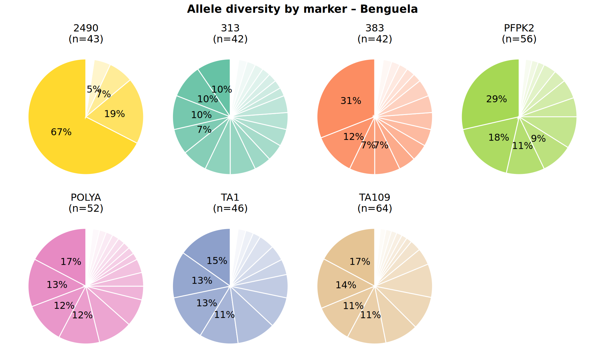
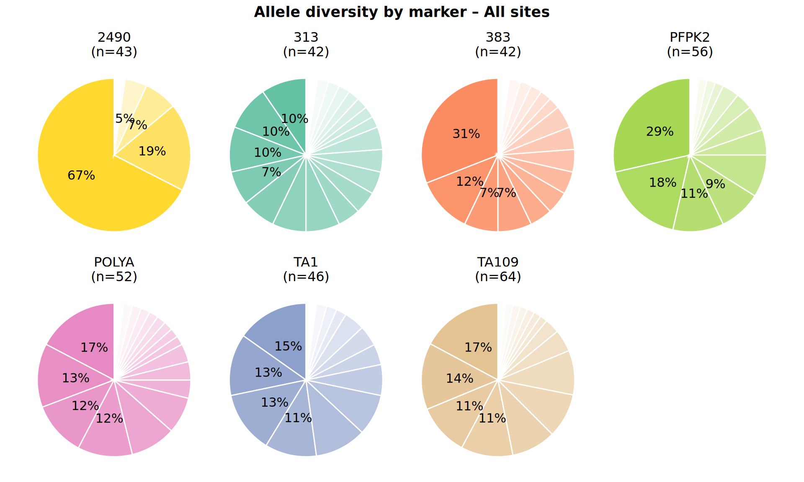
plot_allele_distribution() shows the raw allele distribution per marker, with frequency (%) on the y-axis: a size histogram for length-polymorphic markers (microsatellites, MSP1/MSP2/GLURP), or a bar chart per haplotype name for AmpSeq markers:
p_allele <- plot_allele_distribution(
genotypedata = imported_data$late_failures,
marker_info = imported_data$marker_info,
output_folder = NULL
)
p_allele$by_site$Benguela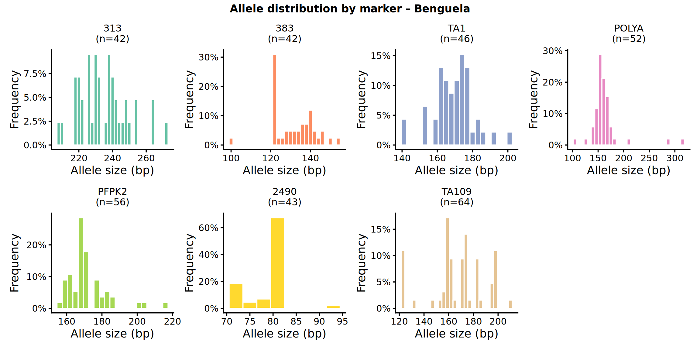
In summary, depending on the type of data used, the specifications for the data input file(s) and marker file:
| Data type | What the allele values look like |
binning_method in the marker file |
Typical markers |
|---|---|---|---|
| Microsatellites | Numeric fragment sizes, e.g. 174, 230.5
|
microsatellite |
TA1, POLYA, PfPK2, 2490, TA109, … |
| MSP1 / MSP2 / GLURP | Numeric fragment sizes, e.g. 450, 652
|
msp_glurp |
K1, MAD20, RO33 (MSP1 family variants); 3D7, FC27, IC (MSP2 family variants); glurp
|
| AmpSeq | Haplotype names/strings, e.g. "cpmp-1", "Hap_A"
|
exact |
Amplicon panels such as cpmp, cpp, ama1
|
4.4 MCMC configuration
The MCMC behavior of the statistical algorithm is controlled by a small set of parameters. A set of default parameters is supplied within the package. More detailed guidance about how to tune these parameters is provided later in the document.
# Read and display the default configuration
config_file <- system.file("extdata", "default_mcmc_config.rds", package = "MalReBay")
cfg <- readRDS(config_file)
cfg| Parameter | Description |
|---|---|
n_chains |
Number of independent MCMC chains. More chains improve convergence diagnostics. Usually 2-3 chains used. The more chains, the more available parallel CPUs are required. |
iter |
Total MCMC iterations per chain (warm-up + sampling combined). Start with 1000-2000 for testing and increase depending on the convergence diagnosis. |
burn_in_frac |
Fraction of iter used as warm-up/burn-in (e.g. 0.5 → first 50% is warm-up, discarded). |
random_seed |
Seed for reproducibility. |
adapt_delta |
Stan’s target acceptance rate for step-size adaptation (0-1). Raise it (e.g. to 0.95) if you see “divergent transitions” warnings. |
If you don’t pass mcmc_config at all, MalReBay() uses this bundled default. You can override any subset of it with a plain list:
With any MCMC-based methods, convergence of the results is important. There is no automatic convergence-based early stopping. MalReBay runs exactly iter iterations per chain, once, for every site, it does not check convergence mid-run and extend automatically. After the run, inspect results$convergence and the convergence plots. If the results have not convereged, increase iter and/or n_chains in mcmc_config and rerun.
Convergence can also be limited by the data itself. If the diagnostics do not improve after increasing iter, the data may not contain enough information to pin down the model parameters. This can happen when a site has few patients, many missing genotypes, or markers with little allelic diversity. In that case, running the sampler longer or with more chains will not help. Instead, check the data quality for that site (see the quality-control and MOI plots), or interpret its probabilities with caution.
5 Running the pipeline
The main package function MalReBay() runs data import, classification, result summaries, and output saving regardless of which of the three data types you are using.
5.1 Parameters
| Parameter | Description |
|---|---|
filepath |
Path to the genotyping Excel/CSV file with the TES data. |
marker_filepath |
Path to the marker metadata Excel file. |
additional_filepath |
Optional path to a separate background-data file (ignored if the main file is an excel file and already has a second sheet with additional infections). |
mcmc_config |
A named list, or a path to an .rds file with configuration parameters for the MCMC |
output_folder |
Directory where all output files and plots are written. Set to NULL to suppress file saving. |
n_workers |
Number of parallel workers for multi-chain MCMC. |
verbose |
If TRUE, prints progress and convergence messages to the console. |
5.2 Example 1: Microsatellite data
This walkthrough uses the bundled example dataset imported in the example before: a real Angola 2021 TES with a panel of 7 neutral microsatellites, for one site. Let’s first load the data:
example_file <- system.file("extdata", "Dataset_microsatellite_panel.xlsx", package = "MalReBay")
imported_data <- import_data(
filepath = example_file,
marker_filepath = marker_file,
verbose = TRUE
)
# The imported object is a list with four elements
names(imported_data)[1] "late_failures" "additional" "marker_info" "data_type" Once the data have been imported, the next step is to run the Bayesian MCMC classification with classify_infections() and provided MCMC configuration parameters. It runs the algorithm site by site and returns the raw results.
quick_config <- list(
n_chains = 2,
iter = 2000,
burn_in_frac = 0.5,
adapt_delta = 0.8,
random_seed = 42
)
mcmc_results <- classify_infections(
imported_data = imported_data,
mcmc_config = quick_config,
verbose = TRUE
)Running MCMC with 2 parallel chains...
Chain 1 Iteration: 1 / 2000 [ 0%] (Warmup)
Chain 2 Iteration: 1 / 2000 [ 0%] (Warmup)
Chain 2 Iteration: 500 / 2000 [ 25%] (Warmup)
Chain 1 Iteration: 500 / 2000 [ 25%] (Warmup)
Chain 2 Iteration: 1000 / 2000 [ 50%] (Warmup)
Chain 2 Iteration: 1001 / 2000 [ 50%] (Sampling)
Chain 1 Iteration: 1000 / 2000 [ 50%] (Warmup)
Chain 1 Iteration: 1001 / 2000 [ 50%] (Sampling)
Chain 2 Iteration: 1500 / 2000 [ 75%] (Sampling)
Chain 1 Iteration: 1500 / 2000 [ 75%] (Sampling)
Chain 2 Iteration: 2000 / 2000 [100%] (Sampling)
Chain 2 finished in 32.0 seconds.
Chain 1 Iteration: 2000 / 2000 [100%] (Sampling)
Chain 1 finished in 32.4 seconds.
Both chains finished successfully.
Mean chain execution time: 32.2 seconds.
Total execution time: 32.5 seconds.[1] "classifications" "all_chains_loglikelihood"
[3] "ids" "locus_summary"
[5] "locus_lrs" "locus_dists"
[7] "locinames" "stan_fits" Instead of running the two steps (importing data and classifying infections) separately, the entire analysis can be run directly with the MalReBay() function. A folder path can be provided (optionally) to save the results and associated figures and summaries. In this example, a folder bayesian_algorithm_output will be created in the same folder as this notebook.
results <- MalReBay(
filepath = example_file,
marker_filepath = marker_file,
mcmc_config = quick_config,
output_folder = "bayesian_algorithm_output",
verbose = TRUE
)Running MCMC with 2 parallel chains...
Chain 1 Iteration: 1 / 2000 [ 0%] (Warmup)
Chain 2 Iteration: 1 / 2000 [ 0%] (Warmup)
Chain 2 Iteration: 500 / 2000 [ 25%] (Warmup)
Chain 1 Iteration: 500 / 2000 [ 25%] (Warmup)
Chain 2 Iteration: 1000 / 2000 [ 50%] (Warmup)
Chain 2 Iteration: 1001 / 2000 [ 50%] (Sampling)
Chain 1 Iteration: 1000 / 2000 [ 50%] (Warmup)
Chain 1 Iteration: 1001 / 2000 [ 50%] (Sampling)
Chain 2 Iteration: 1500 / 2000 [ 75%] (Sampling)
Chain 1 Iteration: 1500 / 2000 [ 75%] (Sampling)
Chain 2 Iteration: 2000 / 2000 [100%] (Sampling)
Chain 2 finished in 34.1 seconds.
Chain 1 Iteration: 2000 / 2000 [100%] (Sampling)
Chain 1 finished in 34.5 seconds.
Both chains finished successfully.
Mean chain execution time: 34.3 seconds.
Total execution time: 34.6 seconds.
Convergence Diagnostics for: Benguela
--------------------------------------------------
Classical Gelman-Rubin R-hat:
Potential scale reduction factors:
Point est. Upper C.I.
1 1
Rank-normalised R-hat (Vehtari 2021): 1.0017 [PASS]
Classical ESS (coda): 569.5
Bulk ESS: 617.4 [PASS]
Tail ESS: 1201.5 [PASS]
Geweke Z-scores per chain |Z| < 1.96 = stationary:
Chain 1: Z = 0.4904 [PASS]
Chain 2: Z = -1.3438 [PASS]
-------------------------------------------------- A quick look at the results: the posterior probabilities per patient, and a side-by-side comparison with the traditional allele match-counting algorithms:
N_Markers_Day0 and N_Markers_Recurrence specify, for each sample, the number of markers for which there are genotyped allelles on Day 0 and recurrence day, respectively. The column N_Markers_Compared represents the number of markers which had genotyped alleles (were comparable) between the two days.
Results of the traditional match-counting algorithms are provided in a separate table. The results of the match counting classification available at the marker level, as well as using the 5/7 and more strict 7/7 requirement of recrudescence to call an overall recrudescence. A comparison of the match counting results with the MalReBay classification result is included.
5.3 Interpreting algorithm convergence visually
Why does algorithm convergence matter? MCMC methods estimate the posterior distribution by sampling from it over many iterations. We want to make sure that all chains have reached the same region of the posterior distribution and are exploring it adequately. If the chains have not converged, the resulting posterior estimates may depend on where the chains started or may not yet represent the target distribution reliably. Convergence diagnostics therefore help us check that the MCMC run has produced stable and trustworthy estimates before interpreting the results. For a detailed description of convergence metrics and the criteria used, please check the section Section 6.4.
Alongside the numeric summary in results$convergence, plot_likelihood_diagnostics() builds, for each site, four diagnostic panels directly from the raw per-chain log-likelihood traces in results$mcmc_loglikelihoods:
# We select first the TES site:
site_name <- names(results$mcmc_loglikelihoods)[1]
conv_plots <- plot_likelihood_diagnostics(
all_chains_loglikelihood = results$mcmc_loglikelihoods[[site_name]],
site_name = site_name,
save_plot = FALSE,
verbose = FALSE
)
# A named list: numeric diagnostics (gelman, ess, rhat_rank, ess_bulk, ess_tail,
# geweke) plus one ggplot object per panel
names(conv_plots) [1] "gelman" "ess" "rhat_rank" "ess_bulk"
[5] "ess_tail" "geweke" "traceplot" "gelman_rubin"
[9] "log_posterior" "autocorrelation" "combined" Traceplot: shows the log-posterior value across iterations, with one line for each chain. A well-converged run should look like a flat, fuzzy “caterpillar”: the chains should overlap and move around the same band, without a clear upward or downward trend or any chain remaining separated from the others.
Gelman-Rubin plot: the running R-hat statistic (comparing between-chain to within-chain variance) as more iterations are included. It should drop and flatten out close to 1 as the x-axis progresses; a shrink factor that stays high or keeps climbing means the chains still haven’t settled on the same distribution. NULL when only a single chain was run.
Log-posterior distribution: a histogram of the log-posterior across all post-warmup draws, chains pooled. It should be a single smooth, roughly bell-shaped distribution. Multiple separated peaks are a sign the sampler is jumping between distinct modes rather than settling into one region of the posterior.
Autocorrelation: one panel per chain, showing how correlated the log-posterior is with itself at increasing lags. It should decay quickly to (and stay near) zero within the first few lags. A slow decay means consecutive draws are still very similar to each other, which is exactly what drags ESS_Bulk/ESS_Tail down even when R-hat looks fine.
Tip
💡To visualize all four panels at once: pass
combine_plots = TRUEto get a fifth element,conv_plots$combined, with all four arranged in a 2x2 grid viapatchwork::wrap_plots(). If any of the panels look unusual (a drifting trace, a shrink factor that hasn’t flattened, a multi-modal histogram, or slow-decaying autocorrelation), the fix is the same: raiseiterand/orn_chainsinmcmc_configand rerun.Advanced: if you also want to see the MCMC sampler own live divergence/treedepth/E-BFMI warnings while you re-tune (silenced by default), pass
suppress_warnings = FALSEtoclassify_infections()orMalReBay().
5.4 What non-convergence looks like
For comparison, here is the same site classified with far too few iterations (iter = 50, well below the recommended minimum) which is a useful reference for recognizing a bad run on your own data.
bad_mcmc_config <- list(n_chains = 2, iter = 150, burn_in_frac = 0.25, random_seed = 55)
results_nonconverge <- MalReBay(
filepath = example_file,
marker_filepath = marker_file,
mcmc_config = bad_mcmc_config,
output_folder = NULL,
verbose = FALSE,
plots = FALSE
)Running MCMC with 2 parallel chains...
Chain 1 WARNING: There aren't enough warmup iterations to fit the
Chain 1 three stages of adaptation as currently configured.
Chain 1 Reducing each adaptation stage to 15%/75%/10% of
Chain 1 the given number of warmup iterations:
Chain 1 init_buffer = 7
Chain 1 adapt_window = 38
Chain 1 term_buffer = 5
Chain 2 WARNING: There aren't enough warmup iterations to fit the
Chain 2 three stages of adaptation as currently configured.
Chain 2 Reducing each adaptation stage to 15%/75%/10% of
Chain 2 the given number of warmup iterations:
Chain 2 init_buffer = 7
Chain 2 adapt_window = 38
Chain 2 term_buffer = 5
Chain 1 finished in 33.2 seconds.
Chain 2 finished in 34.2 seconds.
Both chains finished successfully.
Mean chain execution time: 33.7 seconds.
Total execution time: 34.3 seconds.Compared to the converged run above, ESS_Bulk/ESS_Tail fall well below the 400 threshold, and the Gelman-Rubin plot shows the shrink factor hasn’t fully flattened to 1 by the end of the (short) run:
site_nonconverge <- names(results_nonconverge$mcmc_loglikelihoods)[1]
diag_nonconverge <- plot_likelihood_diagnostics(
all_chains_loglikelihood = results_nonconverge$mcmc_loglikelihoods[[site_nonconverge]],
site_name = site_nonconverge,
save_plot = FALSE,
verbose = FALSE,
combine_plots = TRUE
)
diag_nonconverge$combined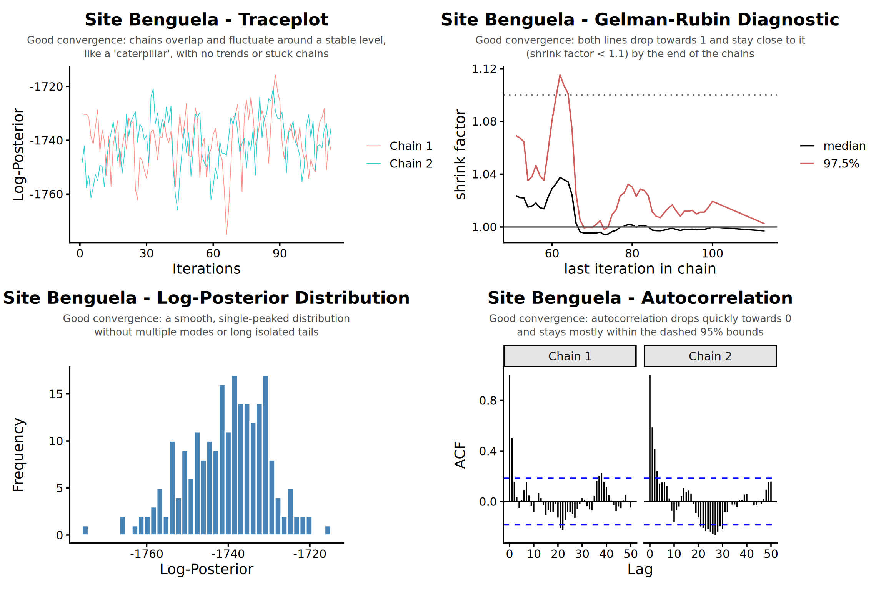
Important
💡A stable-looking classification is not proof of convergence. On this small demo dataset, the final Recrudescence/New infection counts happen to come out identical between the converged and non-converged runs below:
classification_counts <- function(res, label) { data.frame( Scenario = label, Recrudescence = sum(res$posterior_probabilities$Classification == "Recrudescence", na.rm = TRUE), `New infection` = sum(res$posterior_probabilities$Classification == "New infection", na.rm = TRUE), check.names = FALSE ) } rbind( classification_counts(results, paste0("Converged (", quick_config$iter, " iterations)")), classification_counts(results_nonconverge, "Non-converged (200 iterations)") )This is just a coincidence and not a guarantee. With real data, borderline patients (
Probabilitynearprob_threshold) are exactly the ones most likely to change. Always checkresults$convergenceand the plots above.
Going back to the previous example where the algorithm converged and results were robust, the distribution of the posterior probability of recrudescence can be visualized to gather a general understanding of the classification outcome. An overview across all sites, as well as per site can be generated:
In this case, the classification threshold was the default 0.5, so all the infections with the posterior probability of recrudescence larger than 0.5 were classified as recrudescence, while the remaining ones were classified as new infections.
Important
💡A probability distribution with most mass near 0 and 1 (few infections near 0.5) indicates the markers were informative for most patients. If the probability of some infections is around 0.5, it means that the algorithm could not find strong evidence for either outcome (recrudescence or reinfection). It is possible to set a more strict threshold for classification in the MalReBay function call. For example, if we consider only infections with probability above 0.8:
results <- MalReBay(
filepath = example_file,
marker_filepath = marker_file,
mcmc_config = quick_config,
output_folder = NULL,
verbose = TRUE,
prob_threshold = 0.8,
plots = FALSE
)Running MCMC with 2 parallel chains...
Chain 1 Iteration: 1 / 2000 [ 0%] (Warmup)
Chain 2 Iteration: 1 / 2000 [ 0%] (Warmup)
Chain 1 Iteration: 500 / 2000 [ 25%] (Warmup)
Chain 2 Iteration: 500 / 2000 [ 25%] (Warmup)
Chain 2 Iteration: 1000 / 2000 [ 50%] (Warmup)
Chain 2 Iteration: 1001 / 2000 [ 50%] (Sampling)
Chain 1 Iteration: 1000 / 2000 [ 50%] (Warmup)
Chain 1 Iteration: 1001 / 2000 [ 50%] (Sampling)
Chain 2 Iteration: 1500 / 2000 [ 75%] (Sampling)
Chain 1 Iteration: 1500 / 2000 [ 75%] (Sampling)
Chain 1 Iteration: 2000 / 2000 [100%] (Sampling)
Chain 2 Iteration: 2000 / 2000 [100%] (Sampling)
Chain 1 finished in 32.4 seconds.
Chain 2 finished in 32.4 seconds.
Both chains finished successfully.
Mean chain execution time: 32.4 seconds.
Total execution time: 32.4 seconds.
Convergence Diagnostics for: Benguela
--------------------------------------------------
Classical Gelman-Rubin R-hat:
Potential scale reduction factors:
Point est. Upper C.I.
1 1
Rank-normalised R-hat (Vehtari 2021): 1.0017 [PASS]
Classical ESS (coda): 569.5
Bulk ESS: 617.4 [PASS]
Tail ESS: 1201.5 [PASS]
Geweke Z-scores per chain |Z| < 1.96 = stationary:
Chain 1: Z = 0.4904 [PASS]
Chain 2: Z = -1.3438 [PASS]
-------------------------------------------------- 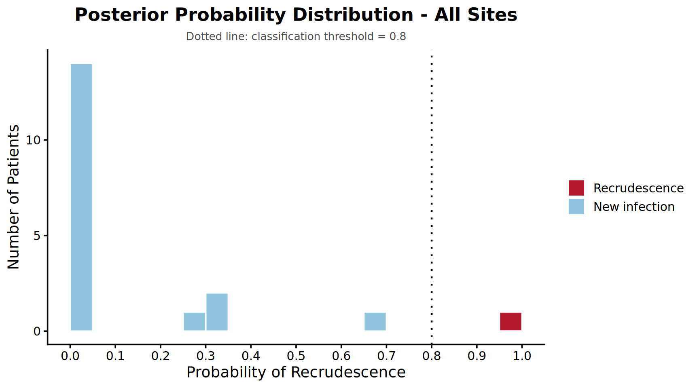
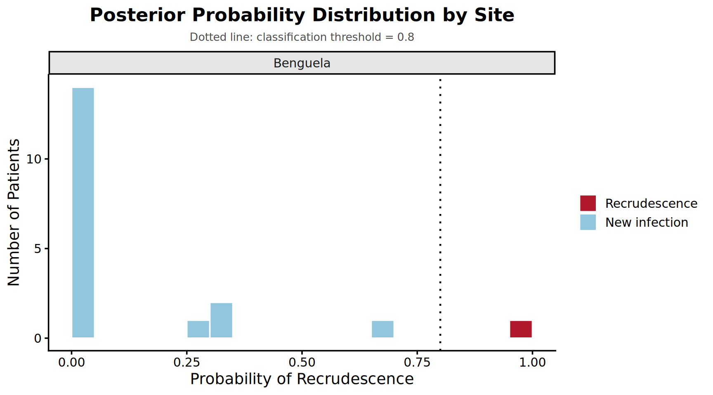
Another way to visualize the classification results is a patient-wise comparison between MalReBay and match counting algorithms where each row represents a patient with a recurrent infection, and each column presents the result of the match counting algorithms (yes/no) and of MalReBay (probability of recrudescence):

5.5 Example 2: AmpSeq
The same MalReBay function is used for AmpSeq data as well, same marker_filepath (already containing AmpSeq markers), just a different genotyping file. MalReBay detects the AmpSeq format automatically from the haplotype strings.
ampseq_file <- system.file("extdata", "Dataset_amplicon_sequencing.xlsx", package = "MalReBay")
ampseq_imported <- import_data(filepath = ampseq_file, marker_filepath = marker_file, verbose = TRUE)
head(ampseq_imported$late_failures[, 1:5])As with the previous microsatellite example, it is worth visualizing the imported data before running the pipeline:
p_moi_ampseq <- plot_moi(ampseq_imported$late_failures, output_folder = NULL)
print(p_moi_ampseq$`1`)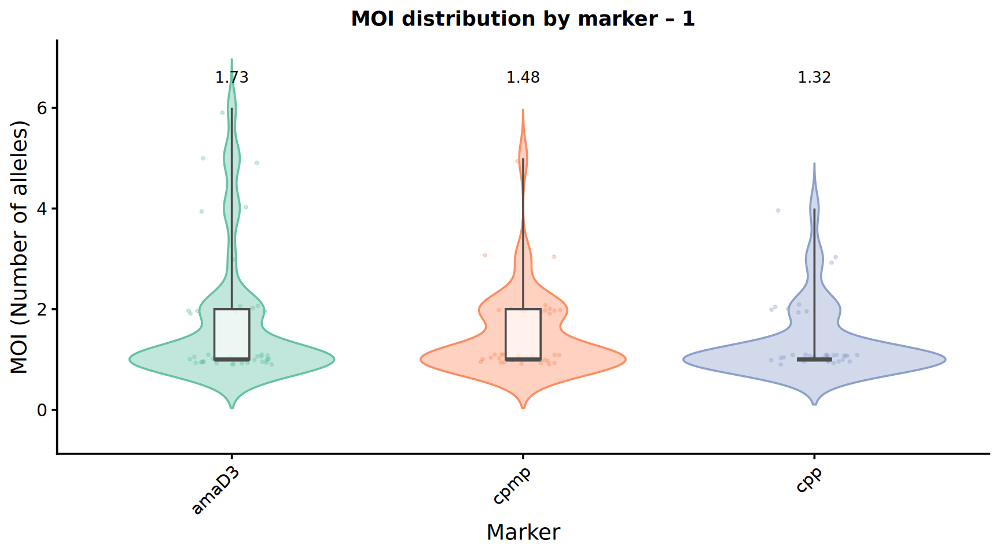
p_div_ampseq <- plot_markers_diversity(
genotypedata = ampseq_imported$late_failures,
data_type = ampseq_imported$data_type,
marker_info = ampseq_imported$marker_info,
output_folder = NULL
)
print(p_div_ampseq$by_site$`1`)
AmpSeq haplotypes are not numeric fragment sizes, so plot_allele_distribution() shows a bar chart of frequency per haplotype name instead of a size histogram:
p_allele_ampseq <- plot_allele_distribution(
genotypedata = ampseq_imported$late_failures,
marker_info = ampseq_imported$marker_info,
output_folder = NULL,
max_cols = 1
)
print(p_allele_ampseq$by_site$`1`)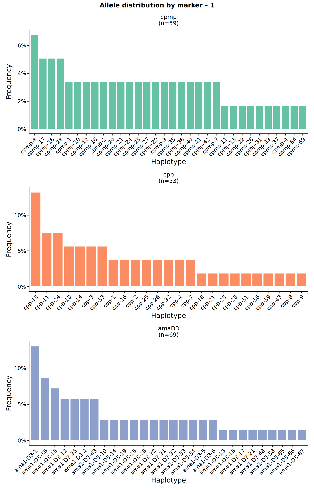
Finally, to run the entire MalReBay analysis and obtain the results and visualizations:
ampseq_results <- MalReBay(
filepath = ampseq_file,
marker_filepath = marker_file,
mcmc_config = quick_config,
output_folder = NULL,
verbose = TRUE
)Running MCMC with 2 parallel chains...
Chain 1 Iteration: 1 / 2000 [ 0%] (Warmup)
Chain 2 Iteration: 1 / 2000 [ 0%] (Warmup)
Chain 1 Iteration: 500 / 2000 [ 25%] (Warmup)
Chain 2 Iteration: 500 / 2000 [ 25%] (Warmup)
Chain 2 Iteration: 1000 / 2000 [ 50%] (Warmup)
Chain 2 Iteration: 1001 / 2000 [ 50%] (Sampling)
Chain 1 Iteration: 1000 / 2000 [ 50%] (Warmup)
Chain 1 Iteration: 1001 / 2000 [ 50%] (Sampling)
Chain 2 Iteration: 1500 / 2000 [ 75%] (Sampling)
Chain 1 Iteration: 1500 / 2000 [ 75%] (Sampling)
Chain 2 Iteration: 2000 / 2000 [100%] (Sampling)
Chain 2 finished in 13.8 seconds.
Chain 1 Iteration: 2000 / 2000 [100%] (Sampling)
Chain 1 finished in 14.3 seconds.
Both chains finished successfully.
Mean chain execution time: 14.1 seconds.
Total execution time: 14.4 seconds.
Convergence Diagnostics for: 1
--------------------------------------------------
Classical Gelman-Rubin R-hat:
Potential scale reduction factors:
Point est. Upper C.I.
1 1.02
Rank-normalised R-hat (Vehtari 2021): 1.001 [PASS]
Classical ESS (coda): 657.2
Bulk ESS: 598.8 [PASS]
Tail ESS: 794 [PASS]
Geweke Z-scores per chain |Z| < 1.96 = stationary:
Chain 1: Z = -0.0665 [PASS]
Chain 2: Z = -1.8469 [PASS]
-------------------------------------------------- 


Finally, let’s have a closer look at the convergence diagnostics:
5.6 Example 3: MSP1 / MSP2 / GLURP
For the final example, this tutorial uses a real MSP1/MSP2/GLURP panel from an Ugandan TES published in Mwesigwa et al. 2025 with 54 patients across three sites, genotyped at the MSP1 family variants (K1, MAD20, RO33), the MSP2 family variants (3D7, FC27), and glurp.
msp_file <- system.file("extdata", "Dataset_msp_glurp.xlsx", package = "MalReBay")
msp_imported <- import_data(filepath = msp_file, marker_filepath = marker_file, verbose = TRUE)
head(msp_imported$late_failures[, 1:8])Note
💡Notice
R033in the column names above: this dataset spells the MSP1 family variant RO33 with a zero instead of a letter O, a common transcription slip in lab spreadsheets.detect_msp_variants()normalises0/Obefore matching, so it’s still recognised as RO33 and folded into themsp1call.
All three plotting functions apply across the three sites, one violin/pie/histogram per MSP1 and MSP2 family variant plus glurp:
$A
$B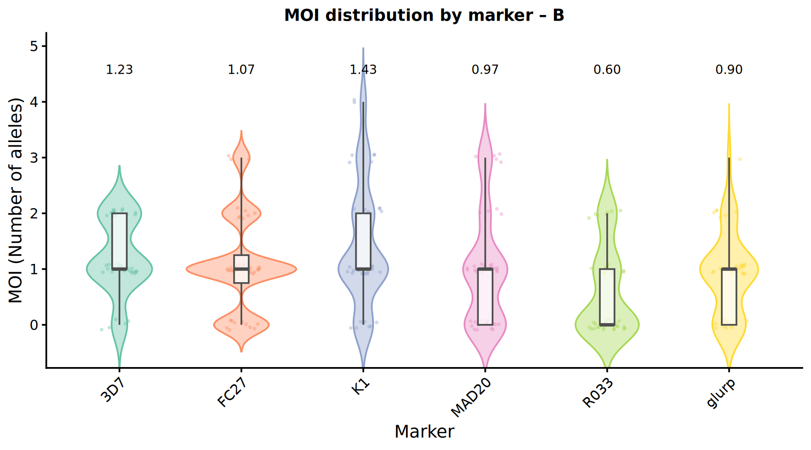
$C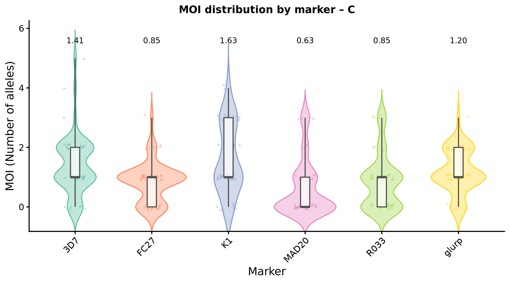
Similarly, the allele diversity across all sites and per site:
p_div_msp <- plot_markers_diversity(
genotypedata = msp_imported$late_failures,
data_type = msp_imported$data_type,
marker_info = msp_imported$marker_info,
output_folder = NULL
)
print(p_div_msp$all_sites)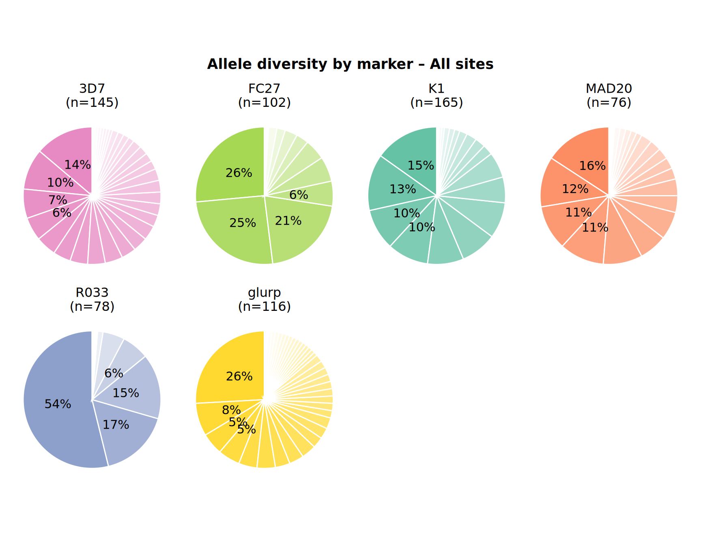
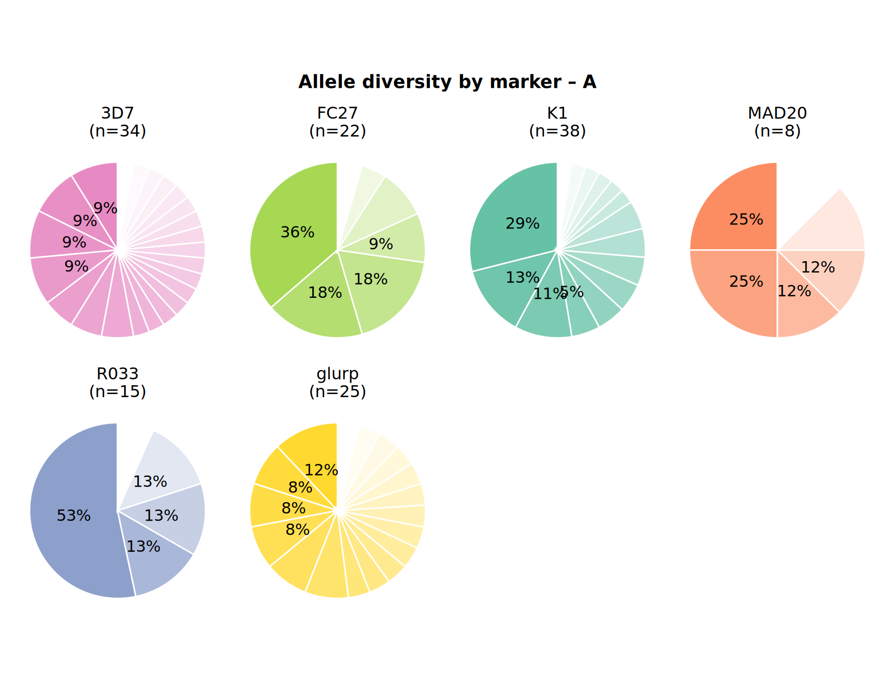
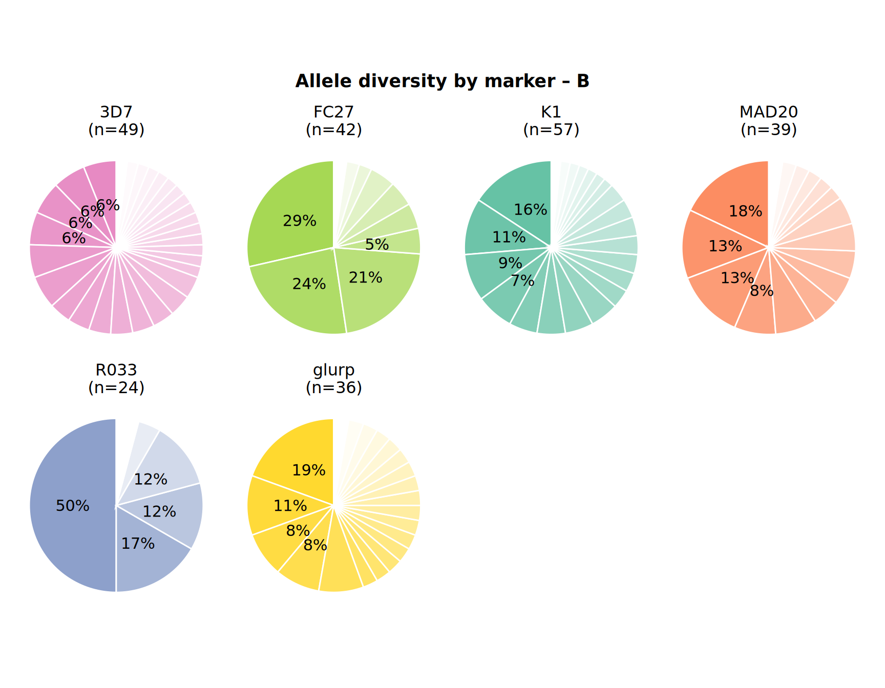
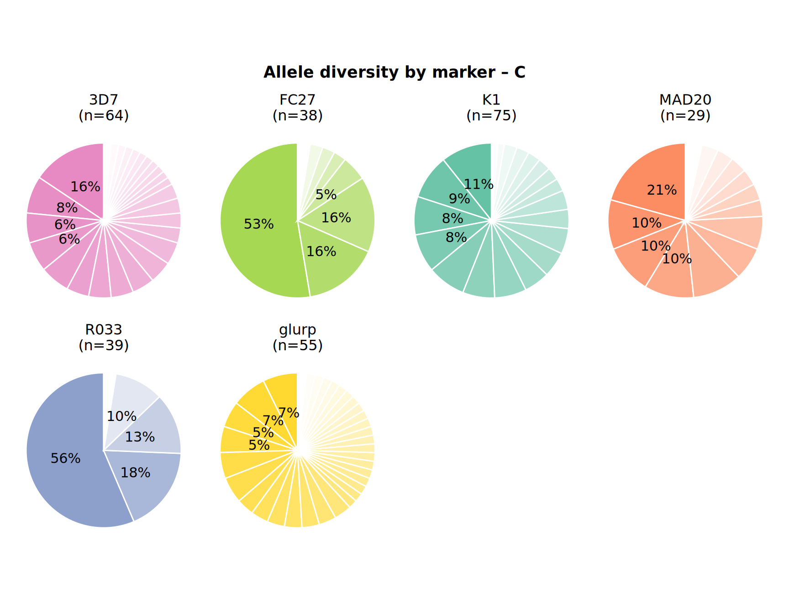
And the allele frequency distribution:
p_allele_msp <- plot_allele_distribution(
genotypedata = msp_imported$late_failures,
marker_info = msp_imported$marker_info,
output_folder = NULL
)
print(p_allele_msp$all_sites)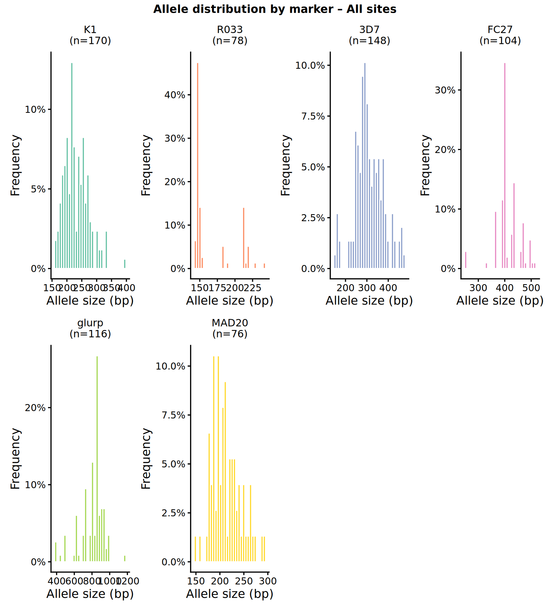
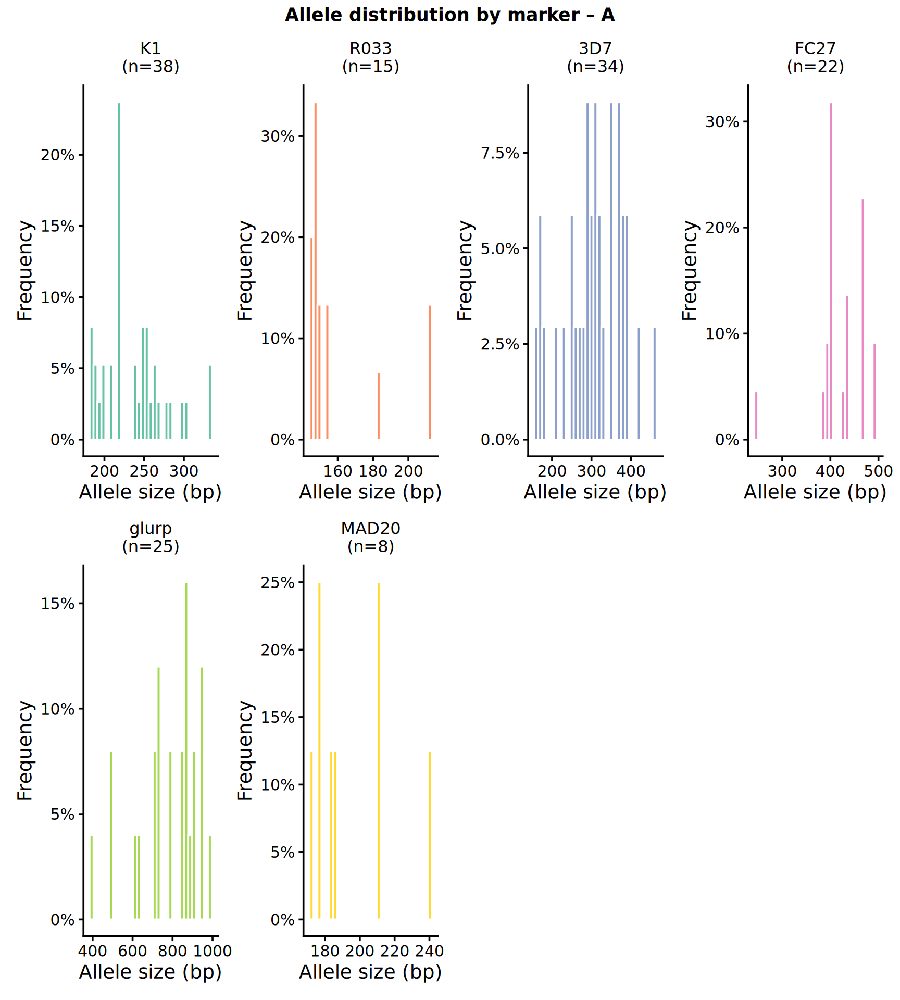
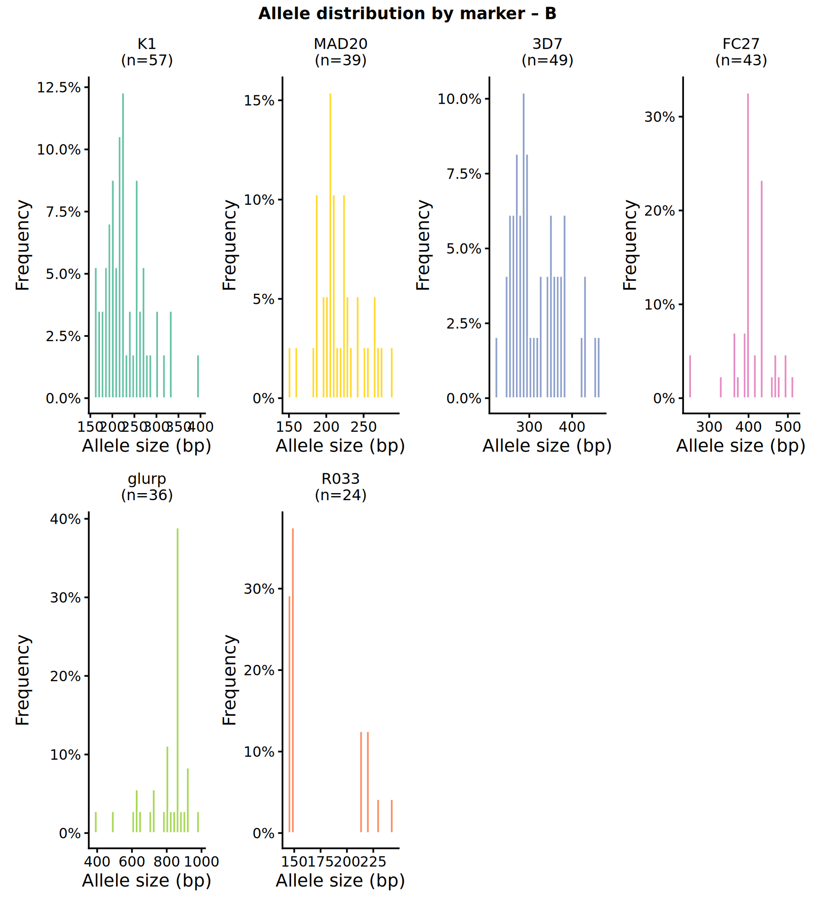
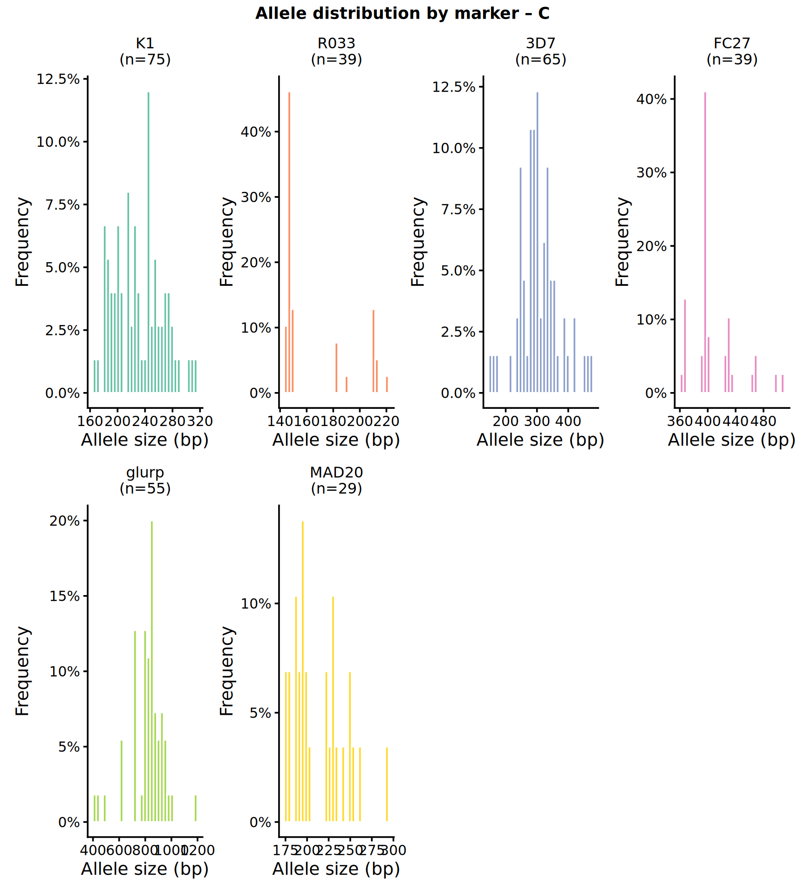
Genotyping in the field is rarely complete for every marker at every visit, so it’s normal to see fewer comparable loci per patient here than in the microsatellite panel above:
msp_results <- MalReBay(
filepath = msp_file,
marker_filepath = marker_file,
mcmc_config = list(n_chains = 2, iter = 1500, burn_in_frac = 0.5, random_seed = 42),
output_folder = NULL,
verbose = TRUE
)Running MCMC with 2 parallel chains...
Chain 1 Iteration: 1 / 1500 [ 0%] (Warmup)
Chain 2 Iteration: 1 / 1500 [ 0%] (Warmup)
Chain 1 Iteration: 500 / 1500 [ 33%] (Warmup)
Chain 2 Iteration: 500 / 1500 [ 33%] (Warmup)
Chain 2 Iteration: 751 / 1500 [ 50%] (Sampling)
Chain 1 Iteration: 751 / 1500 [ 50%] (Sampling)
Chain 2 Iteration: 1250 / 1500 [ 83%] (Sampling)
Chain 2 Iteration: 1500 / 1500 [100%] (Sampling)
Chain 2 finished in 25.8 seconds.
Chain 1 Iteration: 1250 / 1500 [ 83%] (Sampling)
Chain 1 Iteration: 1500 / 1500 [100%] (Sampling)
Chain 1 finished in 31.1 seconds.
Both chains finished successfully.
Mean chain execution time: 28.5 seconds.
Total execution time: 31.3 seconds.Running MCMC with 2 parallel chains...
Chain 1 Iteration: 1 / 1500 [ 0%] (Warmup)
Chain 2 Iteration: 1 / 1500 [ 0%] (Warmup)
Chain 1 Iteration: 500 / 1500 [ 33%] (Warmup)
Chain 2 Iteration: 500 / 1500 [ 33%] (Warmup)
Chain 1 Iteration: 751 / 1500 [ 50%] (Sampling)
Chain 2 Iteration: 751 / 1500 [ 50%] (Sampling)
Chain 1 Iteration: 1250 / 1500 [ 83%] (Sampling)
Chain 1 Iteration: 1500 / 1500 [100%] (Sampling)
Chain 1 finished in 58.2 seconds.
Chain 2 Iteration: 1250 / 1500 [ 83%] (Sampling)
Chain 2 Iteration: 1500 / 1500 [100%] (Sampling)
Chain 2 finished in 81.8 seconds.
Both chains finished successfully.
Mean chain execution time: 70.0 seconds.
Total execution time: 81.9 seconds.Running MCMC with 2 parallel chains...
Chain 1 Iteration: 1 / 1500 [ 0%] (Warmup)
Chain 2 Iteration: 1 / 1500 [ 0%] (Warmup)
Chain 1 Iteration: 500 / 1500 [ 33%] (Warmup)
Chain 2 Iteration: 500 / 1500 [ 33%] (Warmup)
Chain 1 Iteration: 751 / 1500 [ 50%] (Sampling)
Chain 2 Iteration: 751 / 1500 [ 50%] (Sampling)
Chain 2 Iteration: 1250 / 1500 [ 83%] (Sampling)
Chain 1 Iteration: 1250 / 1500 [ 83%] (Sampling)
Chain 2 Iteration: 1500 / 1500 [100%] (Sampling)
Chain 2 finished in 70.2 seconds.
Chain 1 Iteration: 1500 / 1500 [100%] (Sampling)
Chain 1 finished in 72.3 seconds.
Both chains finished successfully.
Mean chain execution time: 71.2 seconds.
Total execution time: 72.4 seconds.
Convergence Diagnostics for: A
--------------------------------------------------
Classical Gelman-Rubin R-hat:
Potential scale reduction factors:
Point est. Upper C.I.
1 1
Rank-normalised R-hat (Vehtari 2021): 1.0059 [PASS]
Classical ESS (coda): 402.4
Bulk ESS: 397.5 [FAIL]
Tail ESS: 793.5 [PASS]
Geweke Z-scores per chain |Z| < 1.96 = stationary:
Chain 1: Z = -1.7542 [PASS]
Chain 2: Z = 2.1244 [FAIL]
--------------------------------------------------
Convergence Diagnostics for: B
--------------------------------------------------
Classical Gelman-Rubin R-hat:
Potential scale reduction factors:
Point est. Upper C.I.
1 1
Rank-normalised R-hat (Vehtari 2021): 1.0049 [PASS]
Classical ESS (coda): 405.6
Bulk ESS: 380.4 [FAIL]
Tail ESS: 692.9 [PASS]
Geweke Z-scores per chain |Z| < 1.96 = stationary:
Chain 1: Z = 0.5171 [PASS]
Chain 2: Z = 2.4352 [FAIL]
--------------------------------------------------
Convergence Diagnostics for: C
--------------------------------------------------
Classical Gelman-Rubin R-hat:
Potential scale reduction factors:
Point est. Upper C.I.
1 1
Rank-normalised R-hat (Vehtari 2021): 1.0012 [PASS]
Classical ESS (coda): 422.4
Bulk ESS: 447.6 [PASS]
Tail ESS: 692.7 [PASS]
Geweke Z-scores per chain |Z| < 1.96 = stationary:
Chain 1: Z = -0.5868 [PASS]
Chain 2: Z = 0.5974 [PASS]
-------------------------------------------------- 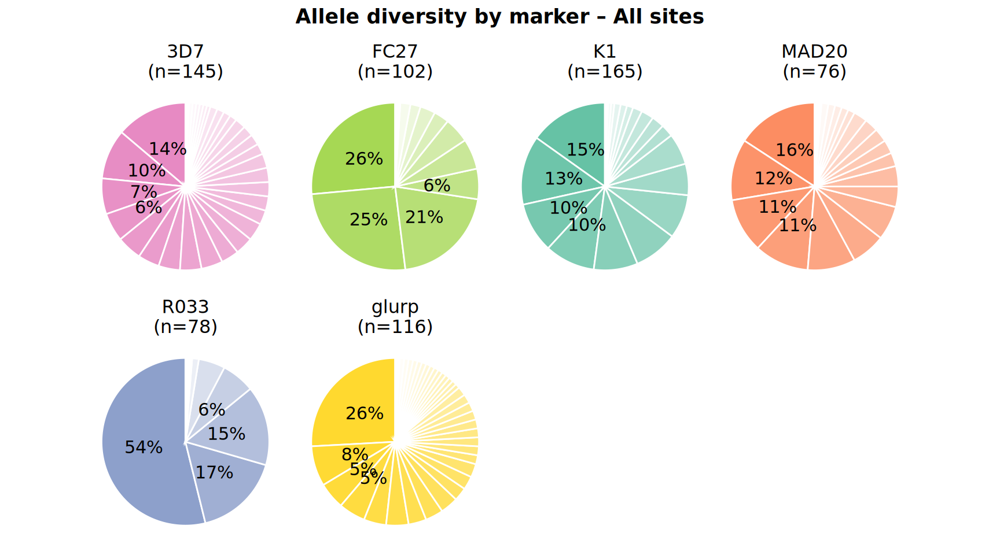
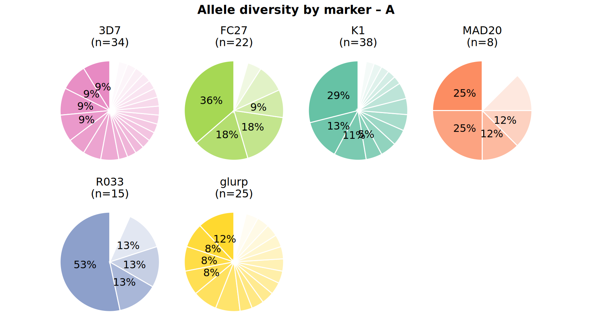
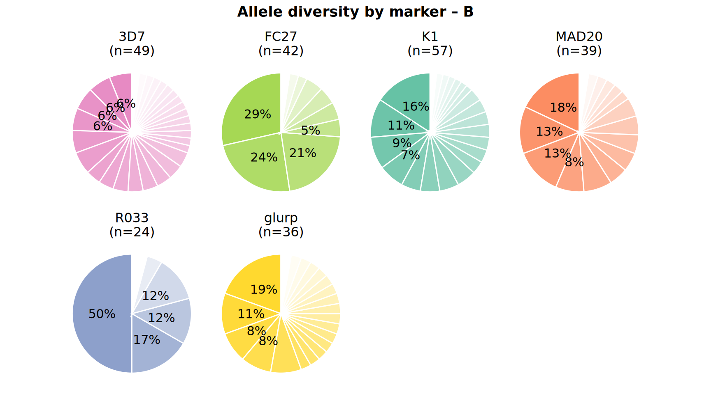
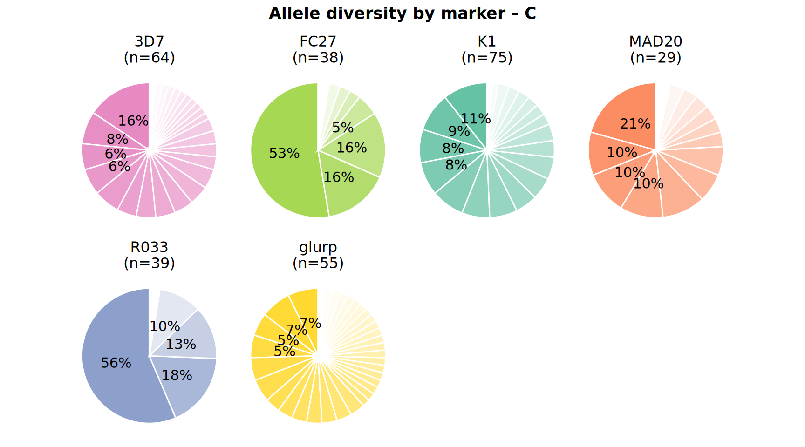
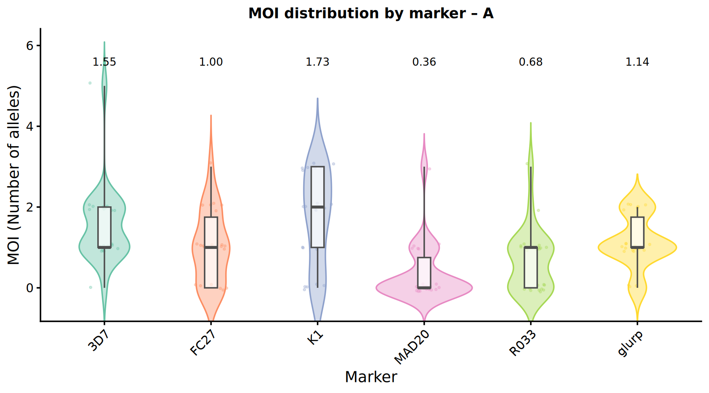
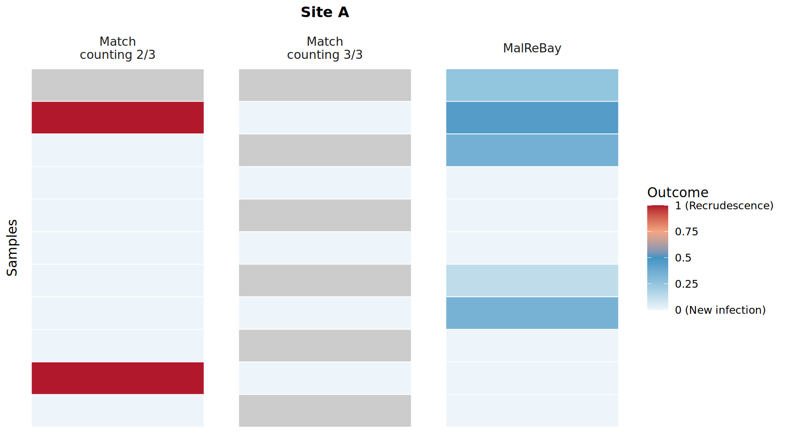
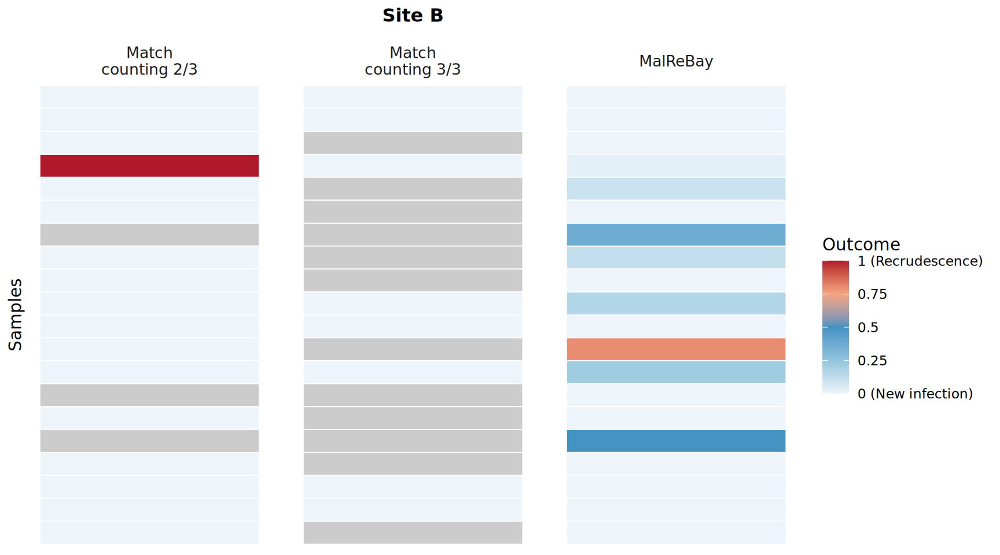
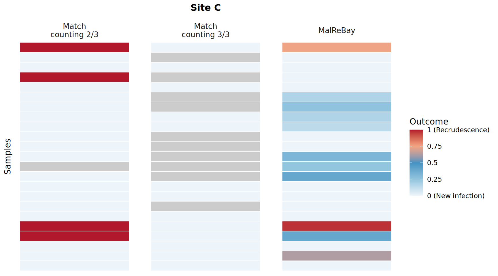
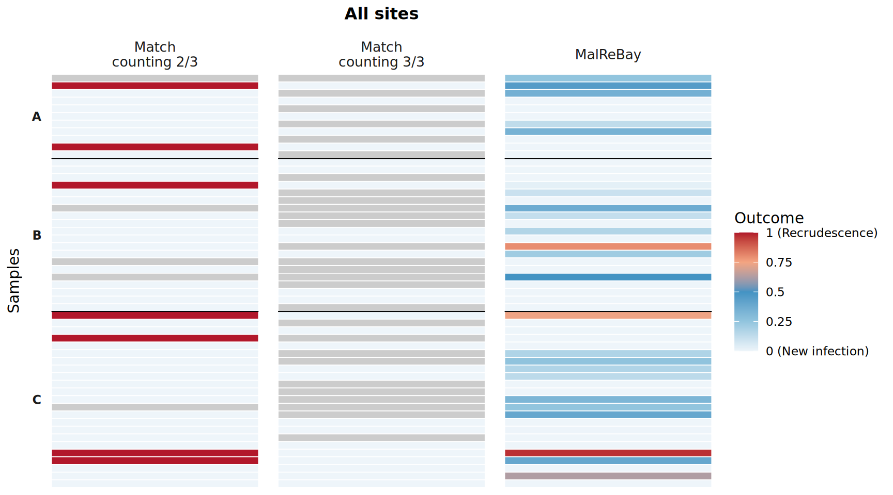
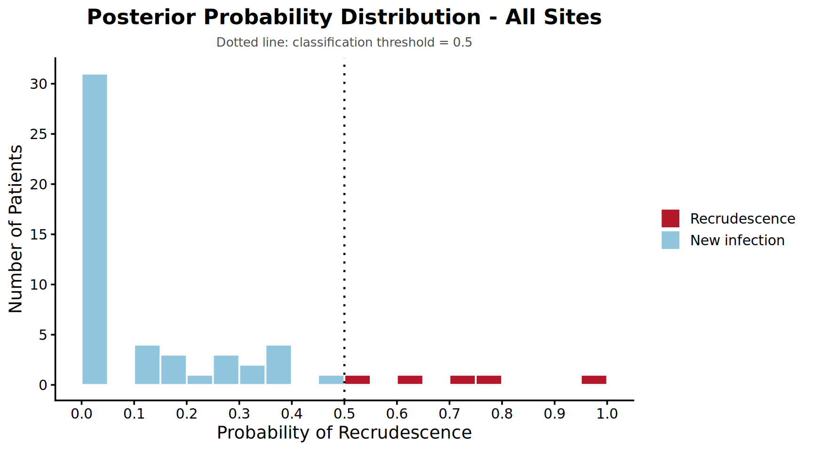
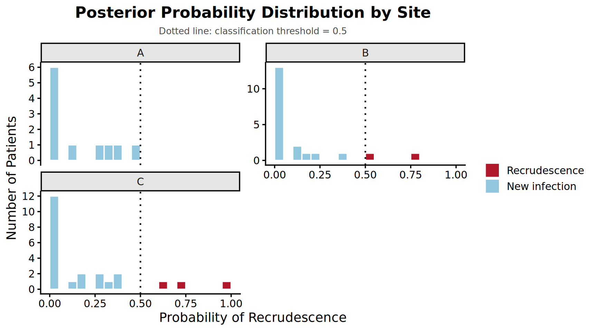
head(msp_results$posterior_probabilities[, c("Site", "Sample.ID", "Probability", "N_Markers_Compared")], 10)As you can see, in this example, there are quite a few infections where the probability of recrudescence is close to 0.5. These are infections where the genotyping data was not conclusive enough for a robust probability estimation. Keep an eye on cases with very few markers compared (N_Markers_Compared of 1 or 2 above) as there is not a lot of genetic evidence to work with for those patients, resulting in the probability sitting closer to 0.5.
Finally, let’s have a closer look at the convergence diagnostics which confirm that the algorithm did converge:
5.7 Using CSV files instead of Excel
filepath and additional_filepath both also accept .csv files — import_data() picks the reader based on the file extension. The one exception is marker_filepath, which must stay Excel for now.
Each of the three example datasets above also ships as CSV in extdata/, so you can try this without preparing your own files:
| Dataset | Excel | CSV |
|---|---|---|
| Microsatellites | Dataset_microsatellite_panel.xlsx |
Dataset_microsatellite_panel.csv + Dataset_microsatellite_panel_additional.csv
|
| AmpSeq | Dataset_amplicon_sequencing.xlsx |
Dataset_amplicon_sequencing.csv |
| MSP1 / MSP2 / GLURP | Dataset_msp_glurp.xlsx |
Dataset_msp_glurp.csv |
Note
A CSV file can only hold one sheet. Where the Excel version bundles recurrence and background samples together as two sheets in one workbook (like the microsatellite panel above), the CSV version is split into two files instead: the main one specified with the argument
filepath, and the_additionalspecified with the argumentadditional_filepath.
The microsatellite example from CSV gives identical results to the Excel version used above:
microsat_csv <- system.file("extdata", "Dataset_microsatellite_panel.csv", package = "MalReBay")
microsat_csv_extra <- system.file("extdata", "Dataset_microsatellite_panel_additional.csv", package = "MalReBay")
imported_from_csv <- import_data(
filepath = microsat_csv,
marker_filepath = marker_file,
additional_filepath = microsat_csv_extra,
verbose = TRUE
)
identical(imported_from_csv$late_failures, imported_data$late_failures)[1] TRUEAnd the full pipeline, MCMC and all, runs the same way from a CSV filepath as from Excel:
ampseq_csv <- system.file("extdata", "Dataset_amplicon_sequencing.csv", package = "MalReBay")
ampseq_results_csv <- MalReBay(
filepath = ampseq_csv,
marker_filepath = marker_file,
mcmc_config = quick_config,
output_folder = NULL,
verbose = TRUE
)Running MCMC with 2 parallel chains...
Chain 1 Iteration: 1 / 2000 [ 0%] (Warmup)
Chain 2 Iteration: 1 / 2000 [ 0%] (Warmup)
Chain 1 Iteration: 500 / 2000 [ 25%] (Warmup)
Chain 2 Iteration: 500 / 2000 [ 25%] (Warmup)
Chain 2 Iteration: 1000 / 2000 [ 50%] (Warmup)
Chain 2 Iteration: 1001 / 2000 [ 50%] (Sampling)
Chain 1 Iteration: 1000 / 2000 [ 50%] (Warmup)
Chain 1 Iteration: 1001 / 2000 [ 50%] (Sampling)
Chain 2 Iteration: 1500 / 2000 [ 75%] (Sampling)
Chain 1 Iteration: 1500 / 2000 [ 75%] (Sampling)
Chain 2 Iteration: 2000 / 2000 [100%] (Sampling)
Chain 2 finished in 15.8 seconds.
Chain 1 Iteration: 2000 / 2000 [100%] (Sampling)
Chain 1 finished in 16.1 seconds.
Both chains finished successfully.
Mean chain execution time: 15.9 seconds.
Total execution time: 16.1 seconds.
Convergence Diagnostics for: 1
--------------------------------------------------
Classical Gelman-Rubin R-hat:
Potential scale reduction factors:
Point est. Upper C.I.
1 1.02
Rank-normalised R-hat (Vehtari 2021): 1.001 [PASS]
Classical ESS (coda): 657.2
Bulk ESS: 598.8 [PASS]
Tail ESS: 794 [PASS]
Geweke Z-scores per chain |Z| < 1.96 = stationary:
Chain 1: Z = -0.0665 [PASS]
Chain 2: Z = -1.8469 [PASS]
-------------------------------------------------- 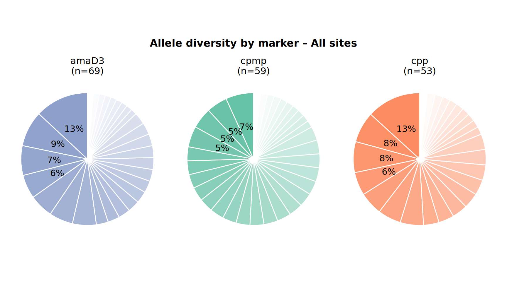

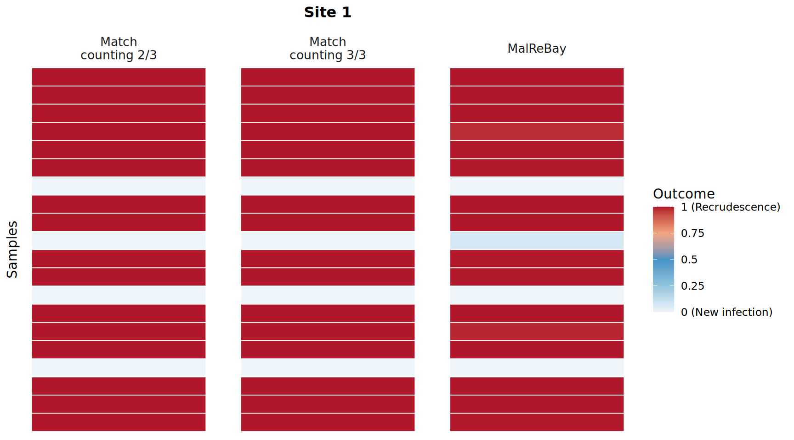
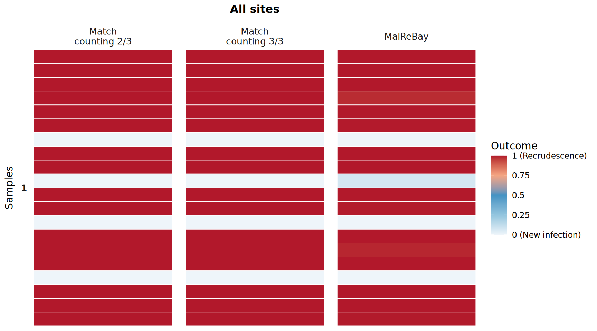
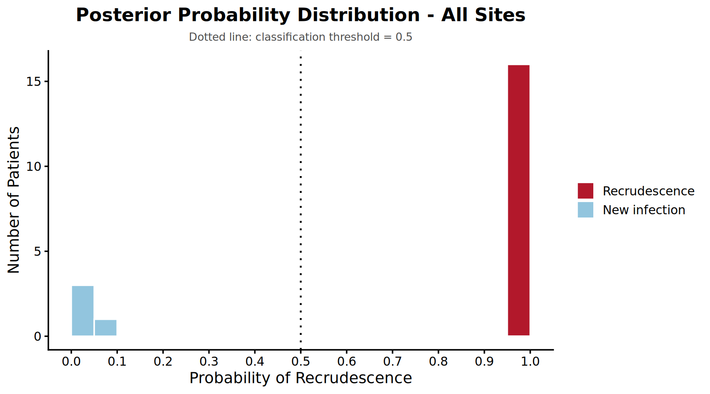
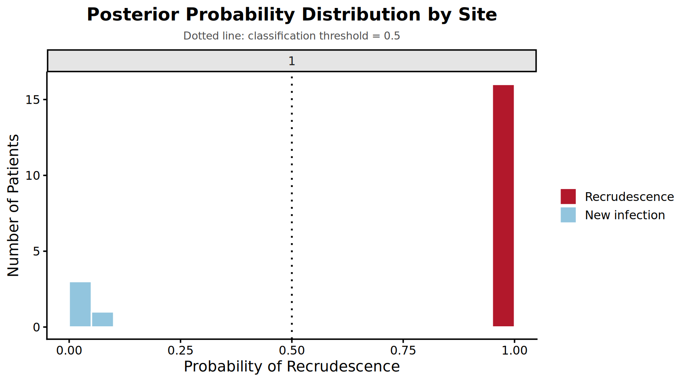
6 Interpreting the results
6.1 What the posterior probability actually measures
For each patient, MalReBay compares the Day-0 and recurrence genotypes marker by marker and asks: how much more likely is this particular pattern of alleles under “same infection persisting” (recrudescence) than under “new, unrelated infection” (reinfection)? Three things drive the answer:
- How common the matching allele is. Allele/family frequencies are estimated from the Day-0 samples in your data (the patients’ own Day-0 rows, plus any background sheet). Matching on a rare allele is strong evidence of a shared origin, because it is an unlikely coincidence for two unrelated infections to share it. Matching on a common allele is much weaker evidence, because plenty of unrelated infections would share it anyway.
-
How the marker type defines a “match”. Microsatellites use a distance-based decay (alleles a few repeat units apart under
repeatlengthare treated as more likely to be the same lineage with stutter/genotyping noise than as truly different); MSP1/MSP2/GLURP markers use family membership (same cluster vs. different cluster, perrepeatlengthas a gap threshold); AmpSeq uses exact haplotype identity. - Missing or hidden alleles are imputed: if a patient is polyclonal and only some clones are observed, the model marginalizes over the plausible hidden ones rather than dropping the marker.
Evidence from each comparable marker is combined across markers (assuming markers are independent, which is standard for the neutral marker panels used in TES), and converted to a probability under an equal 50/50 prior (i.e., before seeing the genotyping data, recrudescence and reinfection are considered equally likely).
6.2 Reading the Probability column
results$posterior_probabilities already includes a Classification column (MalReBay_classification in results$comparison), derived from Probability by the prob_threshold argument to MalReBay() / summarise_results() (default 0.5, the natural cutoff under this model’s equal 50/50 prior):
| Probability | Classification |
|---|---|
≥ prob_threshold
|
Recrudescence |
< prob_threshold
|
New infection |
Pass a different prob_threshold to MalReBay() (or summarise_results() if running the pipeline step by step) if your study calls for a different cutoff than 0.5, e.g. only calling recrudescence at prob_threshold = 0.9 to require stronger evidence before flagging a treatment failure:
results_strict <- MalReBay(
filepath = example_file,
marker_filepath = marker_file,
mcmc_config = quick_config,
output_folder = NULL,
verbose = FALSE,
prob_threshold = 0.9
)Running MCMC with 2 parallel chains...
Chain 2 finished in 29.8 seconds.
Chain 1 finished in 29.8 seconds.
Both chains finished successfully.
Mean chain execution time: 29.8 seconds.
Total execution time: 29.9 seconds.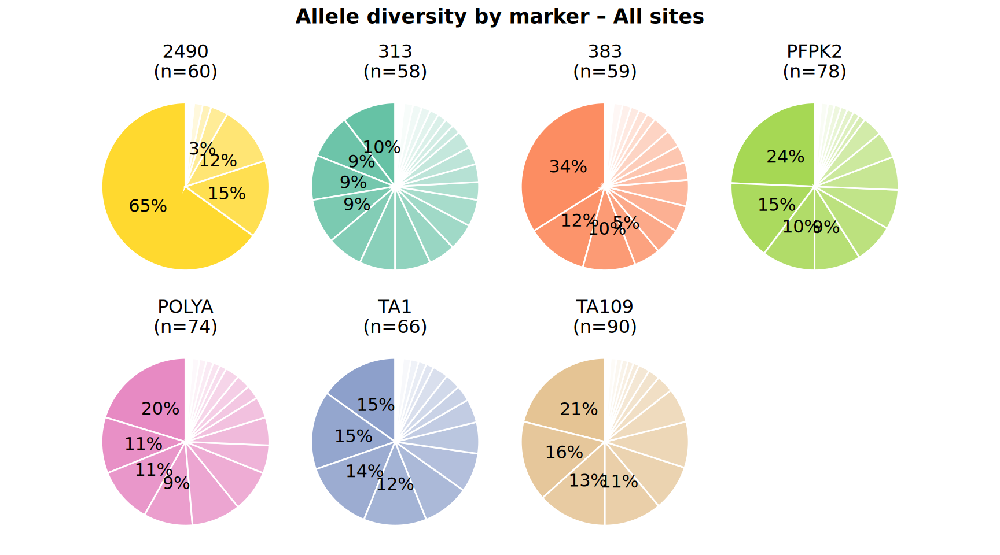
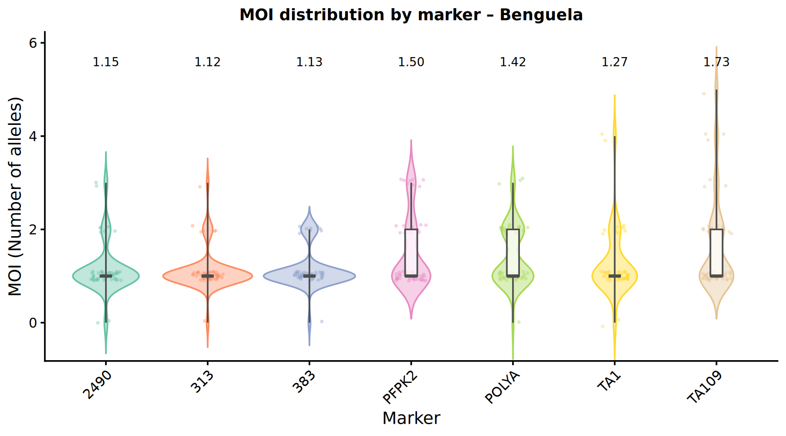

New infection Recrudescence
18 1 Patients with few markers compared (N_Markers_Compared) should be interpreted with caution: with less genetic evidence, the posterior stays closer to the 0.5 prior rather than being pulled confidently toward 0 or 1.
6.3 MalReBay vs. the match counting algorithms
results$comparison also reports the traditional match-counting result per marker (R = match/recrudescence-supporting, NI = mismatch/new-infection-supporting, IND = indeterminate/missing data, ERR = no valid Day-0/recurrence pair), plus two overall calls built from those (Recrudescence, New infection, or NA when too few markers could be compared to apply the rule):
-
Loose rule (
Match_counting_2of3for MSP1/MSP2 panels, otherwise ~70% of markers, e.g.Match_counting_5of7): a simple threshold rule (see Section 4 for which variant applies to your panel). -
Strict rule (
Match_counting_3of3,Match_counting_7of7, …): the same rule, but requiring every marker to match.
For MSP1/MSP2 panels the table also has msp1 and msp2 columns: each family’s allelic variants (e.g. K1/MAD20/RO33) collapsed into one call, which is what the 2/3 rule is applied to.
These are deterministic rules: a marker either counts as a full match or it doesn’t, with no notion of how common that matching allele is or how much genotyping noise to expect. MalReBay’s Probability is the more informative of the two, but the WHO columns are useful precisely because they’re simple and widely used — the comparison heatmap (plot_comparison_heatmap()) puts all three side by side per site so you can see where MalReBay agrees with convention and where it draws on evidence the WHO rules can’t use (rare vs. common alleles, partial/polyclonal data).
6.4 How to read the convergence diagnostics
MCMC draws samples from the posterior distribution step by step, starting each chain from an initial value. Early draws can still depend on where the chain started, and draws close together in a chain are correlated. Convergence diagnostics check two things: whether the chains have forgotten their starting point and are exploring the same distribution, and whether there are enough effectively independent draws to estimate it reliably. MalReBay reports the following for each site:
| Diagnostic | What it measures | Criterion |
|---|---|---|
| Rank-normalised R̂ | Compares the variation between chains with the variation within each chain. If all chains explore the same distribution, the two agree and R̂ ≈ 1. | R̂ < 1.01 |
| Bulk ESS | Effective sample size: how many independent draws the correlated chain is worth, for the centre of the distribution (mean, median). | > 400 |
| Tail ESS | The same for the tails (5% and 95% quantiles), which matter for credible intervals. | > 400 |
| Gelman-Rubin shrink factor (plot) | The classical version of R̂, recomputed on longer and longer portions of the chains. The lines show the median and the upper 97.5% bound. | Both lines settle close to 1 (below 1.1) and stay flat by the end of the run |
| Geweke Z-score | Compares the mean of the start of each chain (first 10%) with the end (last 50%). A large difference means the chain was still drifting. | |Z| < 1.96 |
A run that fails these criteria isn’t necessarily wrong, but its probabilities can’t be trusted yet. The usual fix is to increase iter, and with it the warmup, in the MCMC configuration and run again.
For more details, see the Stan Reference Manual chapter on MCMC convergence and effective sample size. The R̂ and ESS criteria come from Vehtari et al. (2021), and the shrink-factor plot is described in Brooks & Gelman (1998).
6.5 Practical tips
- Provide as much background data as you have. More Day-0 samples → better-estimated allele frequencies → more trustworthy probabilities. This matters more for smaller studies and rarer marker panels.
- Check the diversity and MOI plots before trusting the results. A marker that is monomorphic in your data (one slice in the pie chart) or has very high missingness contributes little to the classification.
- A probability close to 0.5 reflects genuinely limited information, not model failure.
-
Always check the convergence results. If the convergence summary shows high R-hat (
> 1.1) or low ESS (< 400) for a site, increaseiterin the MCMC configuration and rerun.
7 Getting help
If you run into a problem or have a question, please open an issue on the MalReBay GitHub page or contact monica.golumbeanu@swisstph.ch
For full documentation of every function, see ?MalReBay, ?import_data, ?classify_infections, or the package reference site.